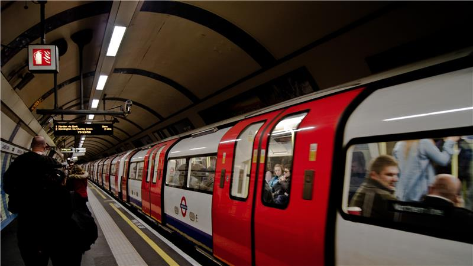

MÉTROPOLE EUROPÉENNE DE LILLE
Accueil
Les lignes ▾
Métro Ligne 1
Métro Ligne 2
Tramway Ligne R
Tramway Ligne T
En temps réel
Les travaux
Quelques articles
Article 1
Article 2
Article 3
Informations en temps réel
Chargement...

Temps réel du métro
Ligne :
Métro Ligne 1
Métro Ligne 2
Direction :
CHU-Eurasanté
4 Cantons
Arrêt :
CHR B Calmette
Porte des Postes
République Beaux-Arts
Rechercher en temps réel